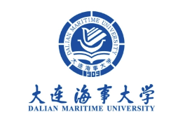

Team Introduction
We are a passionate and innovative university research team consisting of three outstanding students in their respective fields of expertise. We are committed to researching the cutting-edge direction of underwater rescue and search robots through technological means.Member Introduction
Yiming Wang (Team Leader) Yiming Wang is the team leader and currently studying mechanical engineering at Dalian Maritime University. He has performed outstandingly in multiple university research projects and accumulated rich research experience. Chen Siyuan is responsible for the overall planning and management of the project, ensuring that tasks at each stage are completed on time and with high quality.
Yunhe Zhao (Project Development)Yunhe Zhao is a project development expert in the team, specializing in artificial intelligence and mechanical modeling in mechanical engineering. Excellent academic performance and outstanding performance in multiple competitions and research projects. Li Jia is responsible for the design and implementation of the project, developing the structure and control modules required for the robot.
Huanting Fang (Hardware Development)Huanting Fang is a hardware engineer in the team, specializing in mechanical engineering and focusing on physical construction and structural testing. Huanting Fang has profound research in professional fields and possesses solid hardware knowledge and practical abilities. He is responsible for the design and debugging of the hardware part of the robot, ensuring the normal operation of the equipment in complex underwater environments.
Team Mission and Vision
Our mission is to improve the efficiency and safety of underwater rescue through innovative technological means, helping rescue personnel complete search tasks more quickly and accurately. We hope to provide strong technical support for emergency rescue and save more lives through our efforts.
Dalian Maritime University, No.1 Linghai Road, Dalian City, Liaoning Province Email: 2696023190@qq.com